library(tidyverse)
library(HistData)
cholera <- HistData::CholeraDeaths1849 %>%
filter(cause_of_death == "Cholera") %>%
select(date, deaths)
cholera %>% head()
#> # A tibble: 6 × 2
#> date deaths
#> <date> <dbl>
#> 1 1849-01-01 13
#> 2 1849-01-02 19
#> 3 1849-01-03 28
#> 4 1849-01-04 24
#> 5 1849-01-05 23
#> 6 1849-01-06 396 Introduction to Machine Learning
“Human beings are not just passive victims of disease. They are active participants in the biological confrontation between man and microbe.”
This chapter will walk you through a basic construction of a machine learning model, providing a simple explanation of how to model fast-growing phenomena, such as in the case of the spread of infectious diseases. Then in the following chapters of this second section you will dive deep into different techniques for modelling starting from feature engineering to making predictions.
6.1 Deterministic and Stochastic Modelling
The spread of a virus can be seen as a random process, since the number of individuals who are infected at any given time can change randomly. The exact number of individuals who will be infected in the future cannot be determined with certainty, as it depends on various factors such as the contagiousness of the virus, the behaviour of individuals, and the efficacy of mitigation measures.
A deterministic model, on the other hand, could be used to model the spread of a virus under certain conditions, such as a fixed number of individuals, constant contagiousness, and no mitigation measures. This type of model can be used to make predictions about the spread of a virus under certain assumptions, but it will not account for the randomness and uncertainty associated with real-world scenarios. In general, a stochastic process, or random process1 is the type of model which attempts to replicate uncertain outcomes, using probabilities. On the other hand, in a deterministic system the outcome is obtained from a given input, and for this reason it is reproducible.
Most models used to study the spread of a virus are a combination of both deterministic and stochastic models. For example, the SIR (Susceptible-Infected-Recovered) model is a deterministic model that describes the dynamics of the spread of a virus, but it also includes stochastic elements such as random interactions between individuals.
6.2 Machine Learning Models
What a machine learning model is and how it differs from statistical models (deterministic and stochastic) is all a matter of parameter calibration. Understanding the differences between deterministic and stochastic models is crucial for effectively applying machine learning techniques, as it informs the selection of the appropriate modelling approach based on the data characteristics and analysis goals. Machine learning models learn from data to automatically adjust their parameters, optimising them to minimise errors or maximise performance on a given task. Compared to traditional statistical models, they are more flexible and adaptable to complex data patterns.
Machine Learning (ML) techniques are identified as subfields of the Artificial Intelligence (AI) technology, acting by learning relationships in the data. Learning from experience (E), ML computes tasks (T) to improve performance (P). The origins of ML, dating back to the late 1950s, only flourished in the 1990s with the aim of minimising loss on unseen samples.2
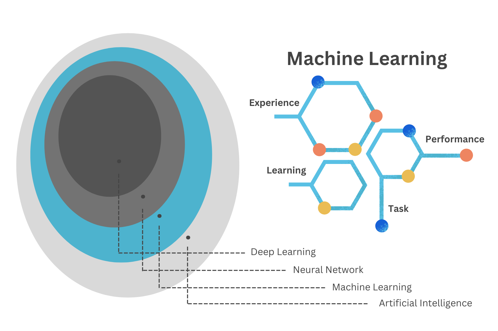
The Machine Learning Cycle is a continuous process that involves the following steps: data collection, data preprocessing, model selection, model training, model evaluation, and model deployment. The cycle is iterative, with each step informing the next, and the process is repeated until the desired performance is achieved. The goal of the Machine Learning cycle is to develop models that can make accurate predictions or decisions based on data.
The emergence of infections is an ongoing evolution and adaptation.3 In the late 1970s, Dr. René Dubos believed that ‘the relationship between humans and microbes is dynamic and influenced by various factors, including environmental conditions, human behaviour, and microbial adaptation’. The importance of understanding the complex interactions between hosts and pathogens in the emergence and spread of infectious diseases is described as dynamic interplay between organisms and their environment, a process of continuous adaptation and interaction. Organisms continuously respond to changes in their surroundings to maintain balance and survival. This is analogous to what happens inside a machine learning model environment. It involves continuous parameter learning and adjustment achieved through a technique called tuning or parameter calibration, resulting in a range of possible alternative scenarios and simulations of the observed data.
6.2.1 Empirically Driven Models
To locate machine learning models within the models framework, we can think about the scope of the analysis, which in this case is predicting the future and preventing undesired outcomes.
In particular, these types of models are subdivided in:
- Mechanistic Model: For example the SIR model is a classic compartmental model used to simulate the spread of infectious diseases. It divides the population into three compartments: susceptible (S), infectious (I), and recovered (R). The equations describe the rate of change of each compartment over time, where \beta represents the transmission rate and \gamma represents the recovery rate.
\text{SIR model } \left\{\begin{matrix} \begin{aligned} \frac{dS}{dt} =& - \beta \cdot S \cdot I \\ \frac{dI}{dt} =& \beta \cdot S \cdot I - \gamma \cdot I \\ \frac{dR}{dt} =& \gamma \cdot I \end{aligned} \end{matrix}\right. \tag{6.1}
- Empirically Driven Model: Empirically driven models do not have explicit mathematical equations like mechanistic models. Instead, they learn patterns and relationships directly from data. An example of an empirically driven model is Random Forest which is a machine learning algorithm that builds multiple decision trees and combines their predictions to make accurate predictions. It works by splitting the data into subsets and building a decision tree for each subset. The final prediction is made by aggregating the predictions of all decision trees. Unlike mechanistic models, Random Forest does not rely on explicit equations or known relationships but instead learns patterns from the input data.
Machine learning models fall under the category of empirically driven models. Unlike mechanistic models, which are based on explicit equations and known relationships between variables (such as the differential equations used in infectious disease modelling), machine learning models derive patterns and relationships directly from data without explicit knowledge of the underlying mechanisms. Therefore, while both mechanistic and empirically driven models are used for prediction, they operate on different principles:
Mechanistic models rely on known relationships and equations, while machine learning models learn patterns from data.4
Before delving deep into machine learning techniques for analysing health data and metrics, it’s essential to proceed step by step in building a modelling framework. This approach begins with a thorough understanding of the modelling procedures.
6.2.2 Learning Methods
There are a variety of models available, and the decision on which model to use depends on the type of learning method either supervised or unsupervised. Supervised learning is applied when data are labelled, meaning that the dataset includes both the independent (predictors) and dependent (outcome) variables. It is the classical approach to machine learning, where the model learns to predict the outcome variable based on the input variables. Unsupervised learning, on the other hand, only includes the input variables, so there is no a direct objective, or a “response” variable to focus on. The model learns to find patterns and relationships in the data without explicit labels, making it useful for clustering and dimensionality reduction.
The nature of the data is also fundamental, including whether the outcome is continuous or discrete, and whether the number of predictors exceeds the number of observations. Models can range from non-linear to multilevel, and they can involve more complex combinations. A major distinction is made between regression and classification based on whether the outcome variable is continuous.
Machine learning models are all types of models that can be all of the above but allow for: learning from data through model parameters auto-calibration. Learning from data is a process where an algorithm adjusts its parameters to minimise the errors in predictions. Each algorithm has its method of learning.
6.2.3 Parameters and Hyper-parameters
In machine learning and statistical modelling, parameters and hyperparameters are two distinct concepts, each playing a crucial role in building and tuning models.
Parameters are the internal coefficients or weights that the model learns from the training data. These values are adjusted during the training process to minimise the loss function and improve the model’s accuracy. For instance, in a linear regression model, parameters include the slope coefficients and the intercept (Equation 6.3). Parameters are optimised during the training phase using optimization algorithms that perform selection, mutation, and crossover of the coefficients. The goal is to find the set of parameters that best fit the training data.
Hyperparameters are the external settings of the model that can be redefined by the practitioner, or optimised using techniques such as grid search, random search, or more advanced methods like Bayesian optimization. This process involves evaluating model performance with different hyperparameter settings. Examples of hyperparameters are the sample size, the number of trees on a random forest model, the learning rate, the regularisation setting (\lambda ) in ridge and lasso regression, and so on.
More will be explained below, but it’s important to understand that creating a model might involve high-level calculations. This means progressing beyond a basic equation to include parameter selection and hyperparameter optimization. In particular, in the study of infectious diseases, the focus is on how variables will evolve over time. For this reason, selecting the appropriate model requires an understanding of the underlying patterns and dynamics of growth.
6.3 The Steps of Building a Model
The process of constructing a model that would be able to explain the relationships between dependent and independent variables in a given system is intended as model development. At the heart of this process is the application of a model function to estimate coefficients that minimise the difference between the model’s predictions and the observed data.
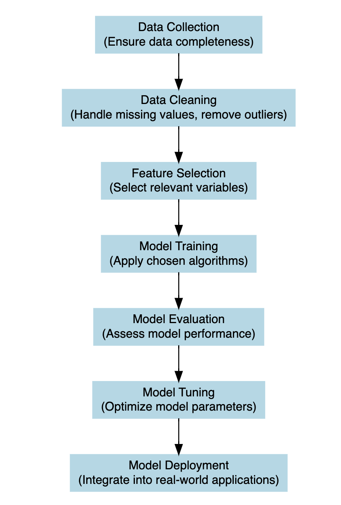
Let’s break this down further: Suppose we have a response variable, denoted as y, which represents the number of deaths or infections in our dataset. Additionally, we have some other variables called predictors x_1, x_2, ..., which are factors that may influence the level of y. These predictors are selected based on the type of analyses, and could include factors such as demographics, secondary health outcomes (morbidity), population density, temperature, vaccination rates, etc. The goal of model development is to create a mathematical function that captures the relationship between the response variable y (or dependent variable) responding to changes in predictor variables x_i (or independent variables) within the study.
This function, often referred to as the model equation or model function, is typically represented as:
y = f(x_1, x_2, ...) + \epsilon \tag{6.2}
Here, f represents the relationship between the predictors and the response, and epsilon represents the error term, which captures the difference between the observed values of y and the values predicted by the model. To estimate the coefficients of the model function, we employ statistical techniques such as linear regression for continuous response variables, logistic regression for binary response variables, and various machine learning algorithms that include tuning parameters to handle more complex dataset and model specifications. These techniques analyse the relationship between the predictors and the response in the dataset and determine the optimal coefficients that minimise the difference between the observed (y) values and the values predicted by the model (\hat y) .
Once the model coefficients are estimated, we can use the model function to predict future values of y for new values of predictor variables x_i. This allows us to simulate the effect of different scenarios or make predictions about future outcomes based on the relationships identified in the data. Overall, the model development process is a crucial step in the modelling framework, as it sets the foundation for understanding and analysing the relationships between variables in a given system. It enables us to extract insights from the data, make predictions, and inform decision-making in various fields, including epidemiology, public health, economics, and environmental science.
6.3.1 Example: Cholera
The first dataset used is from the {HistData} package HistData::CholeraDeaths1849, made of 730 observations and 6 variables, with 2 causes of deaths: cholera and diarrhoea. For this example we select just the deaths due to cholera within 12 months in 1849. Let’s have a look at the first 6 rows of the dataset:
The response variable is y = deaths due to cholera, and the only predictor we are considering on this first step is x = date in days from 1849-01-01 to 1849-12-31. Let’s visualise our data by using the {ggplot2} package with geom_line() as layer.
cholera %>%
ggplot(aes(x = date, y = deaths)) +
geom_line() +
labs(
title = "Deaths due to Cholera in London (1849)",
x = "Date", y = "N. deaths")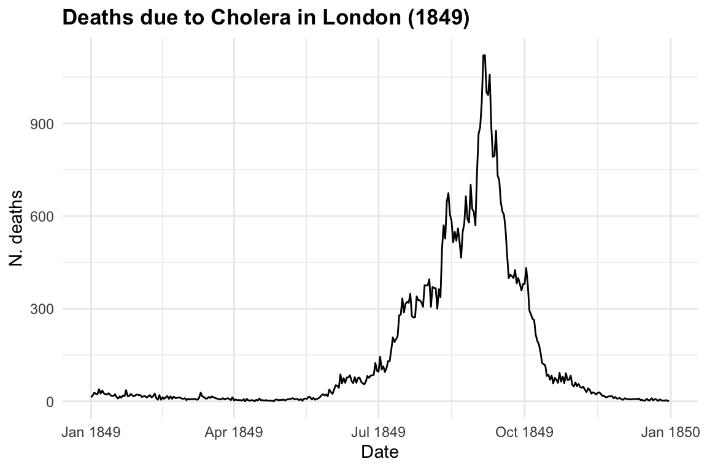
Now let’s observe in mathematical terms what happens when we start investigating the relationship between the response and the predictor, to explain the behaviour of the variables.
The following mathematical formulation represent our observed data, where \beta_0 and \beta_1 are the parameters, respectively the intercept and the slope allowing the computation of the equivalence between y and x 5.
y=\beta_0 + \beta_1 x \tag{6.3}
When a model is attempted, the values of the slope (\beta_0) and the intercept (\beta_1) are estimated6 in order to be able to replicate the values (y) of the response by applying x to our model function.
\hat y = \hat \beta_0+\hat \beta_1x \tag{6.4}
where \hat \beta_0 is the estimate value of the intercept, and \hat \beta_1 the estimated value of the slope. So, the estimated data will approximate the observed data, with some margin of error (\epsilon):
y \sim \hat y + \epsilon \tag{6.5}
The difference between y and \hat y is the error we make when applying a model.
y- \hat y = \epsilon \tag{6.6}
Reducing the error (\epsilon) as much as possible can lead to better fit of the model.
While the case of having just one predictor influencing our response variable might be useful for educational purposes, as illustrated in the data above, scenarios involving more than one predictor are more realistic and lead to increased complexity in the model function. This situation typically results in a multivariate linear model, often referred to as multiple linear regression.
y = \beta_0 + \beta_1x_1 + \beta_2x_2 + ... + \beta_nx_n \tag{6.7}
In this case more than one predictor is used to investigate the varying effects of the response variable. A compact form of the model function with more than one predictor can be stated as:
y=\beta_0 + \sum_{i=1}^{p}{\beta_ix_i}= \beta_0+\beta X \tag{6.8}
In this notation, the capital X takes the form of a matrix containing various x_i: X=(x_1,x_2,x_3,...,x_p), the predictors, and the \beta=(\beta_1,\beta_2,\beta_3,...,\beta_p) are the coefficient to be estimated.
Valuable insights into the trends and drivers of cholera mortality can be gained in order to inform public health interventions and policies aimed at reducing the burden of this disease.
If we were to investigate this spread as we hadn’t seen before and looked at some point in time, let’s say in between June and August 1849 we could have thought that the trend was linear and growing in time. And actually is until some point, as we know what happened next. In the first plot the model line (blue line) is obtained with the geom_smooth() function with the specification method = "lm" . In the second plot we have used all data up to August, and we can clearly see the infections spread smoothly to finally explode shaping an elbow curve. The geom_smooth() selected the best function that suits the data with a locally estimated scatterplot smoothing, or LOESS, which is a nonparametric method for smoothing a series of data in which no assumptions are made about the underlying structure of the data.
cholera %>%
filter(date >= "1849-06-01" & date <= "1849-08-01") %>%
ggplot(aes(x = date, y = deaths)) +
geom_point() +
geom_smooth(method = "lm", se = F) +
labs(
title = "Deaths due to Cholera in London (June to August 1849)",
subtitle = "Linear Model",
x = "Date", y = "N. deaths")
cholera %>%
filter(date <= "1849-08-01") %>%
ggplot(aes(x = date, y = deaths)) +
geom_point() +
geom_smooth(se = F) +
labs(
title = "Deaths due to Cholera in London (January to August 1849)",
subtitle = "method LOESS",
x = "Date", y = "N. deaths")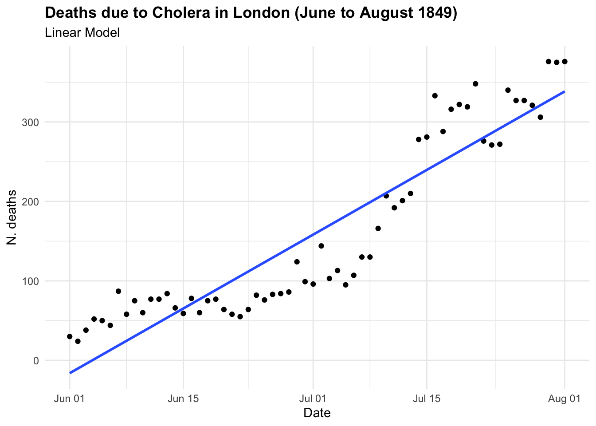
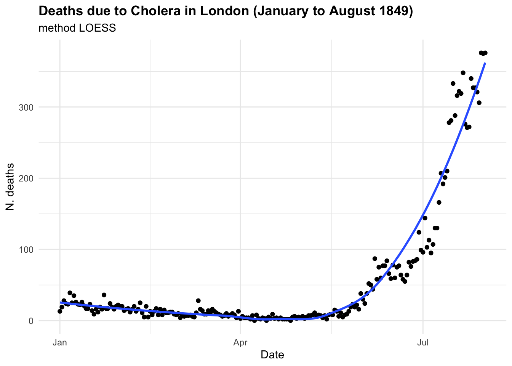
In the case of CholeraDeaths1849, and in the context of infectious diseases, the trend typically starts at a certain point, then increases to reach a peak—the highest level of infection spread—before eventually decreasing back to the initial level. This pattern is inherently non-linear.
To visualise both linear and non-linear trends we can use a geom_smooth() function7, with method = "lm" for linear model and method = "gam" for applying a general additive model.
ggplot(cholera, aes(x = date, y = deaths)) +
geom_line() +
geom_smooth(method = "lm", se = F) +
geom_smooth(method = "gam",
color = "darkred", se = F)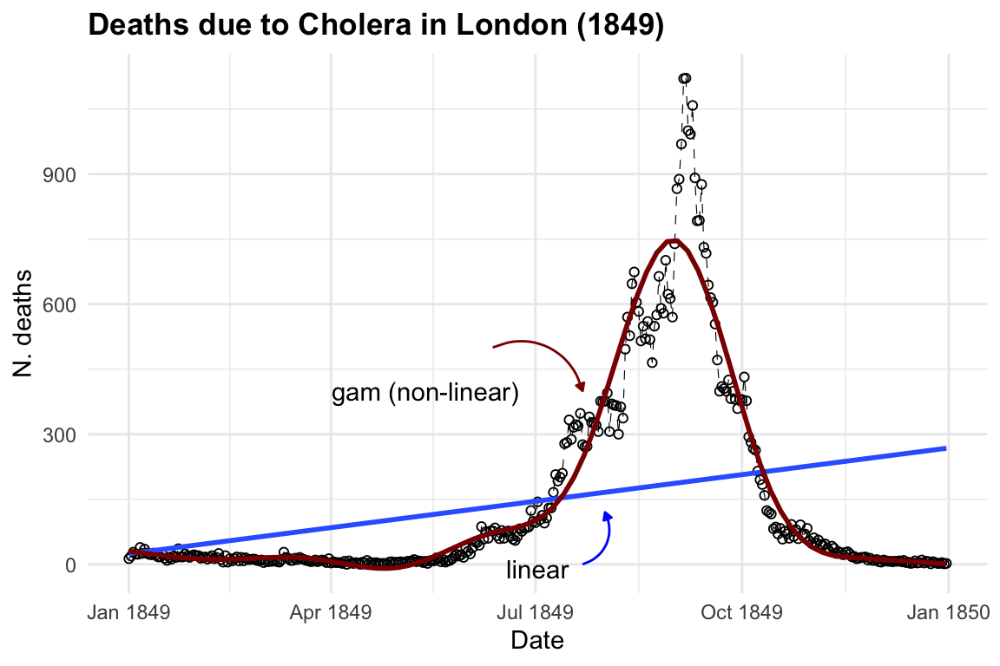
6.3.1.1 GAM - Generalised Additive Model
The purpose of creating a model is to identify underlying patterns within a series of observations. This requires the model to interpolate given observations in order to represent the overall pattern accurately. For instance, in the visualisation above, the blue line made with the geom_smooth() function, when specified with method = "lm", helps us visualise the direction of a linear pattern in the data. However, it’s evident that the data points form a bell-shaped curve as distribution of deaths over time, indicating a non-linear relationship between date and cholera deaths. In the second layer we used method= "gam", Generalised Additive Models (GAMs) flexible extensions of linear models, the most suitable choice for this data used to model non-linear relationships between the response and predictor variables. They are particularly useful when the relationship between the variables is complex and cannot be adequately captured by linear models.
g(\mu) = \beta_0 + f(x) \tag{6.9}
where: g() is a link function, \mu is the expected value of the response variable, \beta_0 is the intercept term, f() represents the smooth functions of the predictor variable. In case of more than one predictor: g(\mu) = \beta_0 + f_1(x_{i1}+f_2(x_{i2}+f_3(x_{i3}+...) there will be p=1,..,j number of f() smooth functions as many as the number of predictors.
What is happening here is a transformation of the predictors through the application of a function: x \sim f(x). The smooth functions are estimated using non-parametric techniques such as splines (polynomial transformations) or kernel functions. These smooth functions allow for flexible modelling of the relationship between the predictor variables and the response variable, capturing non-linearities and complex patterns in the data. The link function g() is typically chosen based on the distributional characteristics of the response variable, to represent the data mean trend.
# Load the mgcv package
library(mgcv)
# use the days instead of the full date
cholera$days <- row_number(cholera)
# Fit a GAM using the gam() function
gam_model <- gam(deaths ~ s(days), data = cholera)
# Print the summary of the GAM model
summary(gam_model)
#>
#> Family: gaussian
#> Link function: identity
#>
#> Formula:
#> deaths ~ s(days)
#>
#> Parametric coefficients:
#> Estimate Std. Error t value Pr(>|t|)
#> (Intercept) 146.008 3.583 40.74 <2e-16 ***
#> ---
#> Signif. codes: 0 '***' 0.001 '**' 0.01 '*' 0.05 '.' 0.1 ' ' 1
#>
#> Approximate significance of smooth terms:
#> edf Ref.df F p-value
#> s(days) 8.969 9 431 <2e-16 ***
#> ---
#> Signif. codes: 0 '***' 0.001 '**' 0.01 '*' 0.05 '.' 0.1 ' ' 1
#>
#> R-sq.(adj) = 0.914 Deviance explained = 91.6%
#> GCV = 4818.7 Scale est. = 4687 n = 365The smooth term for days is significant, as indicated by the approximate significance test. The effective degrees of freedom (edf) for the smooth term are 8.969, suggesting a moderately flexible relationship between deaths and time. The adjusted R-squared value is 0.914, indicating that the model explains approximately 91.4% of the variance in the response variable (deaths). The deviance explained is 91.6%, suggesting that the model fits the data well.
Overall, the model suggests that there is a positive relationship between increasing time and the number of deaths due to cholera, with the number of deaths increasing over time to reach a peak and then eventually slow down to zero. However, it’s essential to consider the context of the data and potential confounding variables before drawing conclusions about causality or making predictions based solely on this model. Other important factors influencing the spread are social behaviour and vaccination. We will talk more about infectious diseases spread in section 4 Chapter 14.
6.3.2 Example: Epidemic X
6.3.2.1 SEIR Model
In this example we simulate data of an epidemic to build a SEIR (susceptible, exposed, infected, recovered) model, a case a little more complicated than just making a SIR (susceptible, infected, recovered) model (Equation 6.1). More about the compartmental models will be shown in Chapter 8, Chapter 14 and in Chapter 15.
So, let’s start looking at how our simple linear equation y= \beta_0+\beta_1 x can be changed to become a differential equation. A differential equation describes how a quantity changes with respect to another quantity, in particular time in this case. So, we are interested in the variation of y within time.
{y}'=\frac{dy}{dt}= \frac{y_1 - y_0}{t_1-t_0} \tag{6.10}
And this is explained by the variation of the predictors in time, the calculation is a derivative. Recall that the derivative of a constant is 0, in our case \beta_0 is the constant.
\frac{dy}{dt}= \frac{d(\beta_0+\beta_1 x)}{dt}= \beta_1 \frac{dx}{dt} \tag{6.11}
This equation describes how y changes with respect to time t, taking into account the rate of change of x with respect to time t, and the constant slope \beta_1 of the line.
y'=\beta_1 \frac{dx}{dt} \tag{6.12}
The Equation 6.12 will be used in the model to describe how individuals move between compartments over time.
For this example we use a package named {deSolve} which solves differential equations.
# Load required packages
library(deSolve) # For solving differential equationsWe define a function for making the SEIR model, and its parameters. \beta is the transmission rate, \sigma the rate of latent individuals becoming infectious, and \gamma the rate of recovery.
SEIR <- function(time, state, parameters) {
# variables need to be in a list
with(as.list(c(state, parameters)), {
# Parameters
beta <- parameters[1] # Transmission rate
sigma <- parameters[2] # Rate of latent individuals becoming infectious
gamma <- parameters[3] # Rate of recovery
# SEIR equations
dS <- -beta * S * I / N
dE <- beta * S * I / N - sigma * E
dI <- sigma * E - gamma * I
dR <- gamma * I
# Return derivatives
return(list(c(dS, dE, dI, dR)))
})
}Then simulate starting parameters by assigning a value to them.
N <- 1000 # Total population size
beta <- 0.3 # Transmission rate
sigma <- 0.1 # Rate of latent individuals becoming infectious
gamma <- 0.05 # Rate of recoverySet an initial state and a time vector, let’s say 100 days.
initial_state <- c(S = N - 1, E = 1, I = 0, R = 0)
# Time vector
times <- seq(0, 100, by = 1)Here we use the ode() function from the {deSolve} package for solving the differential equations in the the SEIR model function that we created above.
output <- deSolve::ode(y = initial_state,
times = times,
func = SEIR,
parms = c(beta = beta,
sigma = sigma,
gamma = gamma))The output is class “deSolve”, “matrix” :
class(output)
#> [1] "deSolve" "matrix"So, it needs to be converted to be a dataframe of time, susceptible, exposed, infected and recovered. All simulated values in 100 days of an epidemic.
simulated_data <- as.data.frame(output)
head(simulated_data)
#> time S E I R
#> 1 0 999.0000 1.0000000 0.00000000 0.000000000
#> 2 1 998.9857 0.9186614 0.09324728 0.002384628
#> 3 2 998.9452 0.8699953 0.17567358 0.009145043
#> 4 3 998.8812 0.8483181 0.25070051 0.019828923
#> 5 4 998.7954 0.8493639 0.32110087 0.034138118
#> 6 5 998.6890 0.8699856 0.38915443 0.051899977This plot shows the simulated data of the SEIR model, with the number of susceptible, exposed, infectious, and recovered individuals over time. The number of susceptible individuals decreases over time as they become exposed and infected, while the number of exposed and infectious individuals increases before eventually decreasing as individuals recover from the infection.
# Plot simulated data
ggplot(simulated_data, aes(x = time)) +
geom_line(aes(y = S, color = "Susceptible")) +
geom_line(aes(y = E, color = "Exposed")) +
geom_line(aes(y = I, color = "Infectious")) +
geom_line(aes(y = R, color = "Recovered")) +
labs(title = "Simulation of SEIR Model",
x = "Time", y = "Population") +
scale_color_manual(values = c(
"Susceptible" = "navy", "Exposed" = "orange",
"Infectious" = "brown", "Recovered" = "darkgreen"))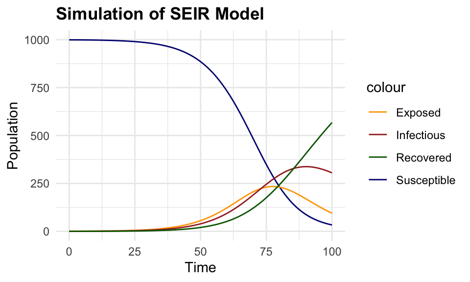
6.3.2.2 Random Forest
The next step is to calibrate this model by applying a machine learning algorithm. A random forest model is a type of model that uses an algorithm called ensemble learning to build multiple decision trees and combine their predictions to make accurate predictions. It works by splitting the data into subsets and building a decision tree for each subset. The final prediction is made by aggregating the predictions of all decision trees. Unlike mechanistic models, Random Forest does not rely on explicit equations or known relationships but instead learns patterns from the input data.
The randomForest() function from the {randomForest} package is used to predict the number of new infections in the simulated data, and train the model to which some normally distributed noise is added to the simulated data.
simulated_data <- cbind(simulated_data,
noise = rnorm(nrow(simulated_data),
mean = 0,
sd = 5))Simulated data are split into training and testing sets to train the model and evaluate its performance. What this means is that the model is trained on a subset of the data (the training set) and then tested on the remaining data (the testing set) to assess its predictive performance.
# Load required packages
library(randomForest)
# Split the data into training and testing sets
set.seed(123)
train_index <- sample(nrow(simulated_data),
0.8 * nrow(simulated_data))
train_data <- simulated_data[train_index, ]
test_data <- simulated_data[-train_index, ]
# Train the Random Forest model - non machine learning yet!
rf_model <- randomForest(
formula = I ~ .,
data = round(train_data)
)
# Plot the tree
reprtree:::plot.getTree(rf_model, k = 3, depth = 4, cex = 0.8)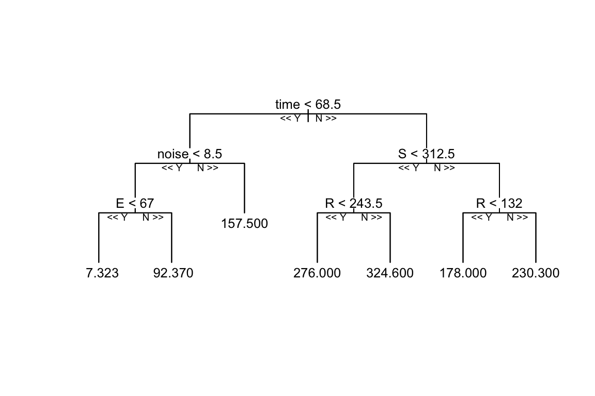
It can be seen that the Random Forest model is trained on the simulated data, and the decision tree is built grouping the data into different categories, in this case the model uses the input variables (S, E, R, noise) with depth = 4 to set the limit of the number of splits in the tree. Things can change with a different set of parameters, such as the number of trees, the number of variables to consider at each split, and the minimum number of data points required to split a node.
To predict the number of new infections based on the input variables, the predict() function is used on the test set, and the Root Mean Squared Error (RMSE) is then calculated to evaluate the model’s performance. It quantifies how much the predicted values deviate from the actual values. The smaller the RMSE, the closer the predicted values are to the actual values, indicating a better predictive model performance. Conversely, a higher RMSE indicates a greater error between predicted and actual values.
# Make predictions on the test set
predictions <- predict(rf_model, newdata = test_data)
# Calculate Root Mean Squared Error (RMSE)
(rmse <- sqrt(mean((test_data$I - predictions)^2, na.rm = T)))
#> [1] 7.400184This means that the model’s predictions deviate from the actual values by an average of 8.66 new infections. This value can be used to assess the model’s performance and identify areas for improvement.
cbind(test_data, pred = predictions) %>%
ggplot(aes(I, pred)) +
geom_point() +
geom_abline() +
labs(
title = "Prediction of Infections for Epidemic X",
subtitle = "Simulate Data",
x = "Infections", y = "Predicted values")
cbind(test_data, pred = predictions) %>%
ggplot(aes(x = time)) +
geom_point(aes(y = I)) +
geom_line(aes(y = pred), color = "navy") +
labs(
title = "Prediction of Infections for Epidemic X",
subtitle = "Simulate Data",
x = "Time (Day)", y = "Obeserved vs Estimated values")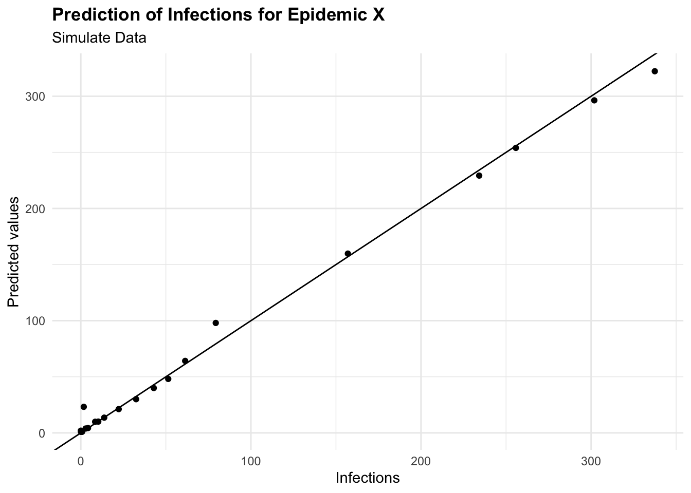
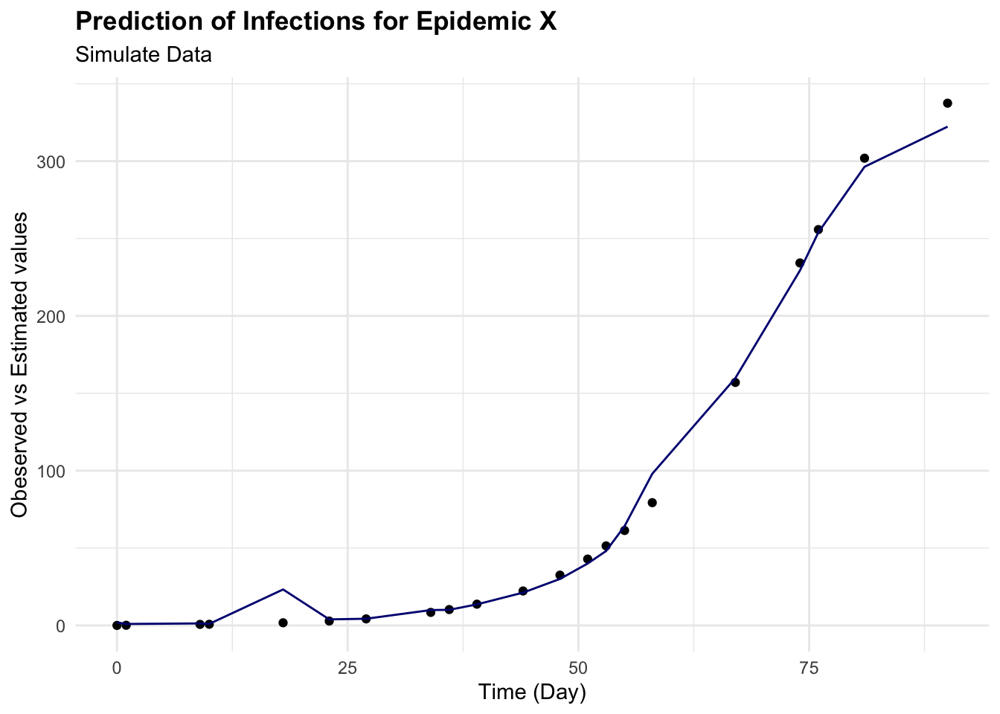
6.3.2.3 Optimization with Tidymodels
Random Forest model is a powerful machine learning algorithm that can be tuned to improve its performance. The tuning process involves selecting the optimal values for the hyperparameters of the model, such as in the case of a random forest model, the number of trees, the number of variables to consider at each split, and the minimum number of data points required to split a node. These hyperparameters can significantly impact the model’s performance, and tuning them can help improve the model’s accuracy and generalisation to new data.
For this task we use the {tidymodels} package, a collection of packages for modelling and machine learning using the tidyverse principles. The {tidymodels} package provides a consistent interface for modelling tasks, making it easier to build, tune, and evaluate machine learning models.
library(tidymodels)
library(dials)
tidymodels_prefer()
# Spending data
set.seed(1231) # Set seed for reproducibility
# Split the data into training and testing sets
split <- initial_split(simulated_data, prop = 0.8)
train_data <- training(split)
test_data <- testing(split)
# Create a resampling scheme: 5-fold cross-validation
cv_folds <- vfold_cv(train_data, v = 5)
# Create a recipe for data preprocessing
data_recipe <- recipe(I ~ ., data = train_data) %>%
step_nzv(all_predictors()) %>%
step_normalize(all_numeric())
# Define the Random Forest model
rf_ranger_model <-
# tuning parameters - Machine Learning Application
rand_forest(trees = tune(),
min_n = tune()) %>%
set_engine("ranger") %>%
set_mode("regression")Automate tuning parameters is performed, in this case, using a Bayesian Optimization with the tune_bayes() function to specify the grid of hyperparameters to search over. You can specify the number of iterations and initial random points to start the optimization. The tune_bayes() function uses the bayes_opt() function from the {tune} package to perform the optimization.
# Bayesian optimization
set.seed(123)
bayes_results <- tune_bayes(rf_ranger_model,
data_recipe,
resamples = cv_folds,
metrics = metric_set(rmse, rsq),
# Number of initial random points
initial = 5,
# Total iterations including initial points
iter = 20,
param_info = parameters(rf_ranger_model))Examine the results of the Bayesian optimization to identify the optimal hyperparameters for the Random Forest model. The show_best() function displays the best hyperparameters based on the optimization results.
# Summarise the tuning results
show_best(bayes_results, metric = "rmse")
#> # A tibble: 5 × 9
#> trees min_n .metric .estimator mean n std_err .config .iter
#> <int> <int> <chr> <chr> <dbl> <int> <dbl> <chr> <int>
#> 1 1873 2 rmse standard 0.0352 5 0.00844 Iter14 14
#> 2 1801 2 rmse standard 0.0353 5 0.00855 Iter9 9
#> 3 1839 2 rmse standard 0.0354 5 0.00832 Iter11 11
#> 4 1883 2 rmse standard 0.0356 5 0.00831 Iter16 16
#> 5 1709 2 rmse standard 0.0356 5 0.00863 Iter10 10Extract the best parameters:
best_bayes <- select_best(bayes_results, metric = "rmse")
best_bayes
#> # A tibble: 1 × 3
#> trees min_n .config
#> <int> <int> <chr>
#> 1 1873 2 Iter14Finally, we can use the best hyperparameters to train the Random Forest model on the training data and evaluate its performance on the test data. The fit() function fits the model using the best hyperparameters, and the predict() function makes predictions on the test data. We can then calculate the Root Mean Squared Error (RMSE) to evaluate the model’s performance.
# Final model with best parameters
final_bayes_model <- finalize_model(rf_ranger_model,
best_bayes)
final_fit <- fit(final_bayes_model,
formula = I ~ .,
data = train_data)
# Predict and evaluate on test data
predictions <- predict(final_fit, new_data = test_data)
augumented <- augment(final_fit, new_data = test_data)
eval_metrics <- metrics(estimate = .pred,
truth = I,
data = augumented)
eval_metrics
#> # A tibble: 3 × 3
#> .metric .estimator .estimate
#> <chr> <chr> <dbl>
#> 1 rmse standard 4.21
#> 2 rsq standard 0.999
#> 3 mae standard 2.35# Calculate Root Mean Squared Error (RMSE)
err <- (test_data$I - predictions$.pred)^2
rmse <- sqrt(mean(err, na.rm = T))
paste("RMSE:", rmse)
#> [1] "RMSE: 4.20689404543576"augumented %>%
ggplot(aes(I, .pred)) +
geom_point() +
geom_abline() +
labs(
title = "Prediction of Infections for Epidemic X",
subtitle = "Simulate Data",
x = "Infections", y = "Predicted values")
augumented %>%
ggplot(aes(x = time)) +
geom_point(aes(y = I)) +
geom_line(aes(y = .pred), color = "navy") +
labs(
title = "Prediction of Infections for Epidemic X",
subtitle = "Simulate Data",
x = "Time (Day)", y = "Obesrved vs Estimated values")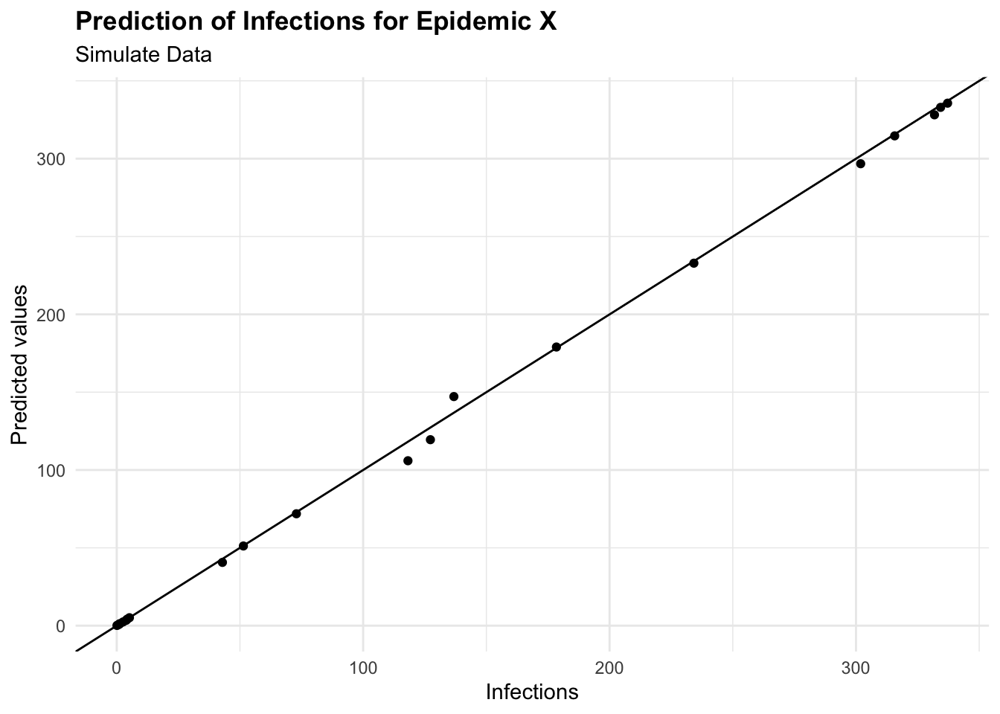
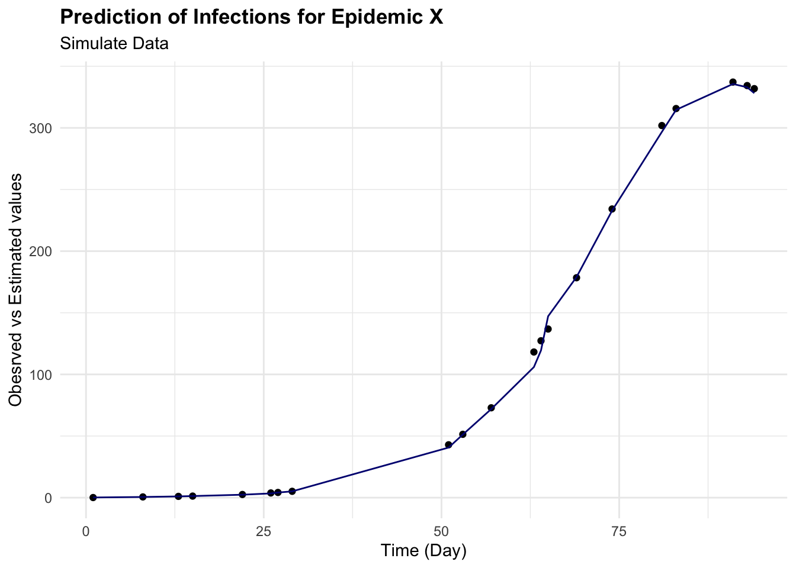
6.3.3 Example: Epidemic Y
6.3.3.1 INLA: An Empirical Bayes Approach to GAMs
In this example is a simulation of an epidemic in 100 days based on temperature level and number of cases simulated with a random poisson distribution.
The model used is the INLA - integrated nested Laplace approximation8 model, an excellent choice for applications requiring repeated model fitting. The INLA approach is particularly useful for fitting complex models, such as Generalised additive models (GAMs), which involve non-linear relationships between predictors and the response variable.
y_i=\beta_0+\sum_{j=1}^n{f_j(x_{i,j})}+\epsilon_i \tag{6.13}
f_j(x_{i,j})=\sum_{k=1}^p\beta_{j,k}B_{j,k}(x_{i,j}) \tag{6.14}
where y_i represent the response vector of observations, f_j(x_{i,j}) the smooth function of the predictors (random effects), B_{j,k} basis function such as splines, \beta_0 and \beta_j the intercept and the coefficients respectively. While \epsilon_i is the error term with a Gaussian distribution:
\epsilon_i \sim Norm(0,\sigma^2) \tag{6.15}
Used as:
INLA::inla(y ~ x1 + x2 + ... + xn, data = data)It is also a valid alternative to Markov Chain Monte Carlo (MCMC) methods used to compute the joint posterior distribution of the model parameters9 - (Appendix B). Due to the deterministic nature of its approximations, the use of a Laplacian approximation to estimate the individual posterior marginals of the model parameters, allows for faster computation, and more efficient estimation of the posterior distribution, making it a popular choice for Bayesian inference in large-scale applications. However, it’s worth noting that for very complex models or those with multi-modal posteriors, MCMC might still be preferred due to its flexibility and ability to characterise the entire posterior distribution.
In INLA, each of GAMs components are treated as random effects with specific prior distributions (typically Gaussian). The smoothness of these effects is controlled by hyperparameters, which INLA estimates from the data. The model is then fitted using the {INLA} package, which provides a fast and efficient way to estimate the posterior distribution of the model parameters.
Let’s assume new epidemic_data with columns day, cases, and temperature. To model the number of cases as a function of time and temperature, considering a non-linear effect of time using a random walk model (model = "rw2") and a linear effect of temperature:
install.packages("INLA",
repos = c(getOption("repos"),
INLA = "https://inla.r-inla-download.org/R/stable"),
dep = TRUE)library(INLA)# Sample data creation
set.seed(123)
epidemic_data <- data.frame(
day = 1:100,
temperature = rnorm(100, mean = 20, sd = 5),
cases = rpois(100,
lambda = 10 + sin(1:100 / 20) * 10 + rnorm(100,
sd = 5)))
# Define the model formula
formula <- cases ~ f(day, model = "rw2") + temperature
# Fit the model using INLA
result <- inla(formula,
family = "poisson",
data = epidemic_data)# Summary of the results
result$summary.fixedThe model summary shows the estimated coefficients for the fixed effects of the model, including the intercept and the effect of temperature. The estimated coefficients represent the average effect of each predictor on the response variable, accounting for the non-linear effect of time and the linear effect of temperature. The summary also includes the standard errors and 95% credible intervals for each coefficient, providing a measure of uncertainty around the estimates.
result$summary.hyperpar %>% t()
#> Precision for day
#> mean 23176.059
#> sd 14734.793
#> 0.025quant 4473.789
#> 0.5quant 19952.248
#> 0.975quant 60407.982
#> mode 13533.496# Extracting the fitted values and the effect of time
time_effect <- result$summary.random$day
fitted_values <- result$summary.fitted.values
# Creating a data frame for plotting
plot_data <- data.frame(Day = epidemic_data$day,
FittedCases = fitted_values$mean,
Lower = fitted_values$`0.025quant`,
Upper = fitted_values$`0.975quant`)
# Plotting the results
ggplot(plot_data, aes(x = Day)) +
geom_ribbon(aes(ymin = Lower, ymax = Upper),
fill = "lightblue",
alpha = 0.4) +
geom_line(aes(y = FittedCases),
color = "blue") +
labs(title = "Fitted GAM for Epidemic Y",
x = "Day", y = "Fitted number of cases")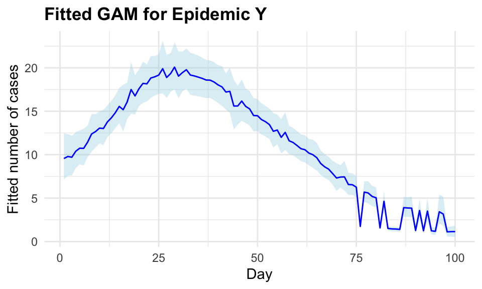
The inla() function allows a model specification, in this case a Poisson is used and a formula. The non-linear effect is a second-order random walk model = "rw2", a statistical modelling approach used to represent a type of prior commonly used in Bayesian modelling for time series or spatial data where you expect smoothness and some degree of continuity between adjacent observations. In particular, GAMs are used to capture non-linear trends by fitting smooth, flexible functions to the data. These functions can be represented through various basis functions, and a second-order random walk is one such basis function. The random walk model assumes that the values of the response variable are correlated with their neighbours, creating a smooth, continuous effect over time.
6.4 Measures of Machine Learning Models
To evaluate the performance of machine learning models, the loss function and the evaluation metrics are used to assess how well the model generalizes to new, unseen data. The loss function quantifies the discrepancy between the predicted outcomes and the actual values, providing a measure of the model’s performance. The evaluation metrics, such as accuracy, precision, recall, and F1 score, provide additional insights into the model’s performance and can help identify areas for improvement.
6.4.1 Loss Functions
The loss function is a method for evaluating how well a machine learning algorithm model features a dataset. The cost function is the average of all loss function values.
The accuracy of predictive models is checked with loss functions, which measure the discrepancy between the predicted outcomes and the actual values. This adjustment of the model learning process is performed through iterative adjustments of the model parameters with the objective to improve the model’s performance.
Models are trained to a specific loss function that guides the optimization process and quantifies the model performance.
6.4.1.1 Regression Loss Functions
Regression loss functions are for regression tasks where the prediction involves continuous numbers, and include:
- Mean Squared Error (MSE): MSE calculates the average of the squares of the errors, i.e., the average squared difference between the estimated values and the actual value. This loss function is sensitive to outliers as it squares the errors before averaging them.
MSE=\frac{1}{n}\sum_{i=1}^{n}{(\hat{Y_i}-Y_i)^2} \tag{6.16}
- Mean Absolute Error (MAE): MAE measures the average magnitude of the errors in a set of predictions, without considering their direction (i.e., it averages the absolute differences between predictions and actual outcomes). Unlike MSE, MAE is not overly sensitive to outliers, making it suitable for datasets with anomalies.
MAE=\frac{1}{n}\sum_{i=1}^{n}{|\hat{Y_i}-Y_i|} \tag{6.17}
- Mean Squared Logarithmic Error (MSLE): MSLE is useful when targeting a regression model to predict exponential growth. By taking the log of the predictions and actual values, MSLE transforms the target variable to reduce the skew of the distribution, which can lead to more stable predictions across a range of values.
MSLE=\frac{1}{n}\sum_{i=1}^{n}{(log(\hat{Y_i}+1)-log(Y_i+1))^2} \tag{6.18}
6.4.1.2 Classification Loss Functions
Classification loss functions are for classification tasks, where the output is categorical, typical loss functions include:
- Binary Cross-Entropy: Also known as log loss, this function measures the performance of a classification model whose output is a probability value between 0 and 1. It is particularly useful for binary classification tasks.
L=-\frac{1}{m}\sum_{i=1}^{m}{(y_i*log(\hat{y_i})+(1-y)log(1-\hat{y}))} \tag{6.19}
- Hinge Loss: Often used with Support Vector Machines (SVMs), hinge loss evaluates the margin of classification errors, providing a penalty for miss-classified points to improve model accuracy.
L=max(0,1-y*f(x)) \tag{6.20}
Choosing the right loss function: The selection of a suitable loss function depends on the specific characteristics of the data and the model application. For instance, if predicting precise values is crucial and the data range is wide, MSE might be appropriate. Conversely, for models where the prediction scale is logarithmic or the data contains many outliers, MSLE or MAE could be more effective.
The choice of a loss function is not merely a technical decision but a strategic one, affecting how a model learns and performs on unseen data. Each loss function has its strengths and trade-offs, making it vital for practitioners to understand their implications thoroughly. Understanding these measures and how they influence model training and predictions can greatly enhance the effectiveness of machine learning applications.
6.4.2 Evaluation Metrics
While loss functions are used during the training process to guide the optimization of the model parameters, evaluation metrics measure how well the model’s predictions align with the actual outcomes, providing a signal to adjust the model.
6.4.2.1 Regression Evaluation Metrics
For regression tasks, the following metrics are commonly used to assess the model’s predictive performance:
- Root Mean Squared Error (RMSE): A measure of the average deviation between predicted and actual values, calculated as the square root of the average of the squared differences between predicted and actual values. It is commonly used in regression tasks to assess the model’s predictive accuracy.
RMSE = \sqrt{\frac{1}{n} \sum_{i=1}^{n} (Y_i - \hat{Y_i})^2} \tag{6.21}
- R-squared (R2): A statistical measure of how well the model fits the data, indicating the proportion of variance in the dependent variable that is explained by the independent variables. It ranges from 0 to 1, with higher values indicating a better fit.
R^2 = 1 - \frac{SS_{residual}}{SS_{total}} \tag{6.22}
- Adjusted R-squared: A modified version of R-squared that adjusts for the number of predictors in the model, providing a more accurate measure of the model’s goodness of fit. It penalises the addition of unnecessary predictors that do not improve the model’s performance.
Adjusted R^2 = 1 - \frac{(1 - R^2)(n - 1)}{n - k - 1} \tag{6.23}
6.4.2.2 Classification Evaluation Metrics
For classification tasks, the following metrics are commonly used to evaluate the model’s performance:
- Accuracy: The proportion of correctly classified instances out of the total instances in the dataset. It is a simple and intuitive measure of a model’s performance, but it may not be suitable for imbalanced datasets.
Accuracy = \frac{TP + TN}{TP + TN + FP + FN} \tag{6.24}
- Precision: The proportion of true positive predictions out of all positive predictions made by the model. It is a measure of the model’s ability to avoid false positives.
Precision = \frac{TP}{TP + FP} \tag{6.25}
- Recall (Sensitivity): The proportion of true positive predictions out of all actual positive instances in the dataset. It is a measure of the model’s ability to identify all positive instances.
Recall = \frac{TP}{TP + FN} \tag{6.26}
Confusion Matrix: A table that summarises the performance of a classification model, showing the number of true positive (TP), true negative (TN), false positive (FP), and false negative (FN) predictions. It is used to calculate metrics such as accuracy, precision, recall, and specificity.
F1 Score: The harmonic mean of precision and recall, providing a balanced measure of a model’s performance. It is particularly useful when dealing with imbalanced datasets.
F1 = 2 \times \frac{Precision \times Recall}{Precision + Recall} \tag{6.27}
- Receiver Operating Characteristic (ROC) Curve: A graphical representation of the trade-off between true positive rate (sensitivity) and false positive rate (1-specificity) across different threshold values. It is used to evaluate the performance of binary classification models.
TPR = \frac{TP}{TP + FN}; \text{ }FPR = \frac{FP}{FP + TN} \tag{6.28}
- Area Under the Curve (AUC): The area under the ROC curve, which provides a single value to summarise the model’s performance. An AUC of 0.5 indicates a random classifier, while an AUC of 1.0 indicates a perfect classifier.
AUC = \int_{0}^{1} TPR(FPR) dFPR \tag{6.29}
These are only a few of the most common loss functions and evaluation metrics able to provide insights into the model’s performance to generalize to new data and make accurate predictions.
6.4.3 Public Health Loss Functions
“The public may be less interested in environmental quality than in economic prosperity.” Dubos
In the field of public health the measures of cost like mortality and morbidity are used to evaluate the outcome of health and well-being of a population.
The most common analyses methods are:10
- Cost-utility, using quality-adjusted life years (QALYs)
- Cost-effectiveness, for specific outcomes, such as life expectancy or medical outcomes.
As mentioned in the history of health metrics (Chapter 2), the cost-utility framework has been employed for calculating QALYs. Over time, this measure has been criticised for potentially discriminating against certain disabilities in the population by assigning costs that were perceived as either too high or too low, and for failing to capture the full spectrum of human health conditions.
Moreover, comprehensive tools that assess the impacts through cost-effectiveness measures to estimate the effectiveness of health interventions should also include a measure of disability. The measure of DALYs (Disability-Adjusted Life Years), developed in 1993, took major consideration of the disability status in evaluating the well-being of a population. It was further enhanced by incorporating a layer based on disability weights.
In summary, the measures for a cost-effectiveness intervention involve a careful calibration of following components: mortality, morbidity, and disability.
Robert P. Dobrow, Introduction to Stochastic Processes with R (John Wiley & Sons, 2016).↩︎
“Machine Learning,” Wikipedia, April 2024, https://en.wikipedia.org/w/index.php?title=Machine_learning&oldid=1220758567.↩︎
Lyle D. Broemeling, Bayesian Analysis of Infectious Diseases: COVID-19 and Beyond (New York: Chapman; Hall/CRC, 2021), doi:10.1201/9781003125983.↩︎
Ruth E. Baker et al., “Mechanistic Models Versus Machine Learning, a Fight Worth Fighting for the Biological Community?” Biology Letters 14, no. 5 (May 16, 2018): 20170660, doi:10.1098/rsbl.2017.0660.↩︎
We can compare this formulation to a general Y=a+mx linear function. In our case a would be the intercept and m the slope of the line that will summarise the information between y and x.↩︎
The hat (^) on top of the variables indicates the values are estimated.↩︎
More about data visualisations techniques are in chapter Chapter 10.↩︎
“Approximate Bayesian Inference for Latent Gaussian Models by Using Integrated Nested Laplace Approximations - Rue - 2009 - Journal of the Royal Statistical Society: Series b (Statistical Methodology) - Wiley Online Library,” n.d., https://rss.onlinelibrary.wiley.com/doi/full/10.1111/j.1467-9868.2008.00700.x.↩︎
W. R. Gilks, S. Richardson, and David Spiegelhalter, eds., Markov Chain Monte Carlo in Practice (Chapman; Hall/CRC, 1995), doi:10.1201/b14835.↩︎
Marja Hult et al., “Cost-Effectiveness Calculators for Health, Well-Being and Safety Promotion: A Systematic Review,” The European Journal of Public Health 31, no. 5 (May 10, 2021): 997–1003, doi:10.1093/eurpub/ckab068.↩︎